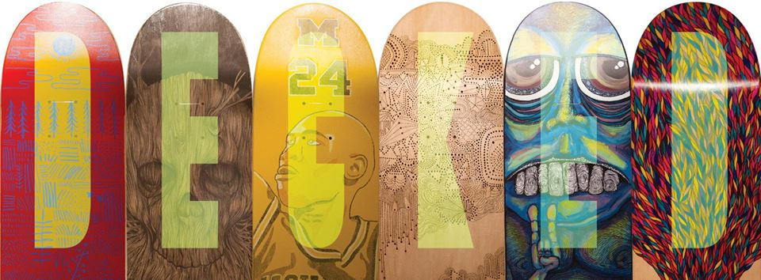
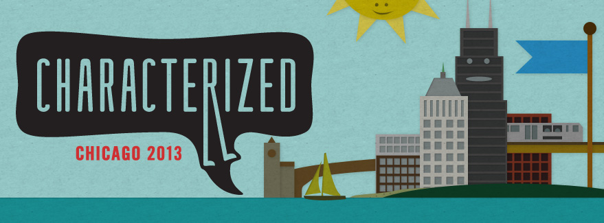
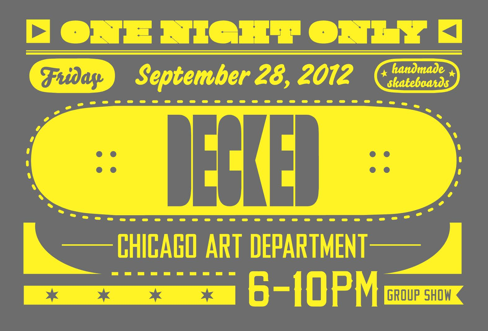
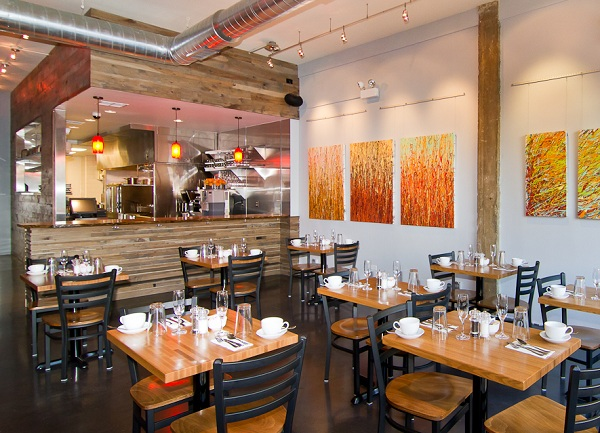
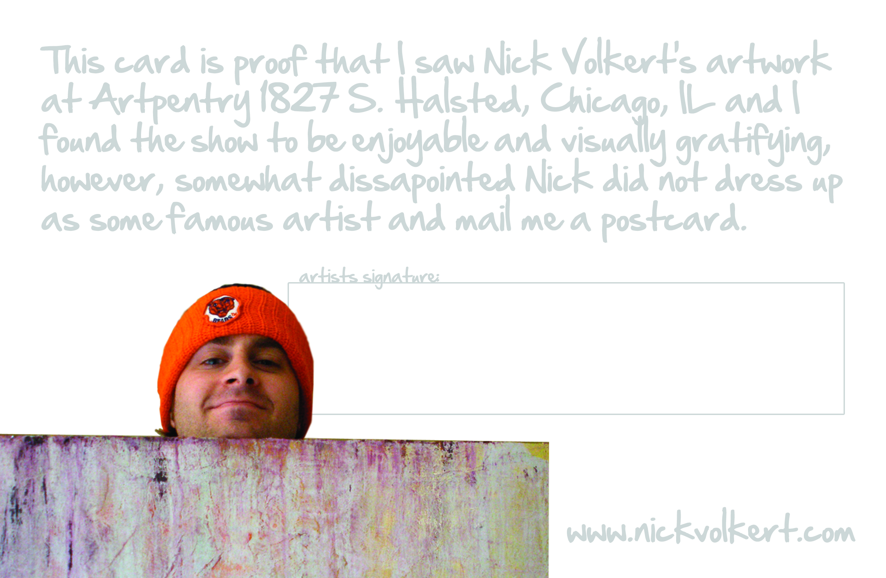
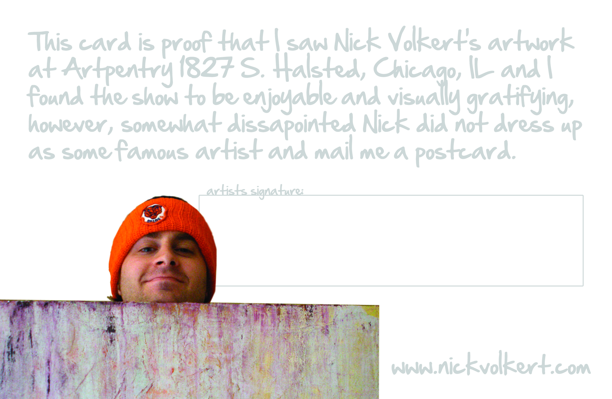
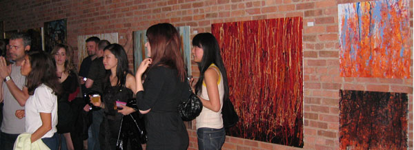
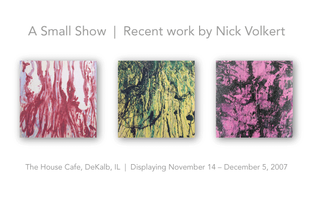
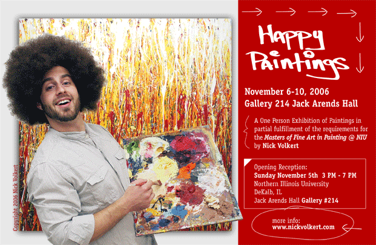

CV
Hey Chicago!
Date: Friday, December 6th, 2013 - Friday, Decmber 20th, 2013
Venue: The Gallery Cabaret, Chicago IL
Description: A small showing of Chicago-themed art for the holidays.
More info can be seen on the Facebook invite. Click here.

"Decked + Argo Tea"
Date: June 7th, 2013 – September 5th, 2013
Venue: Argo Tea, 16 W Randolph, Chicago IL
“Decked” was a group effort by 6 fresh Chicago artists decking the walls of Argo Tea's downtown Chicago headquarters with their customized skate decks.
Featuring:
- Lou Medel
- Nicholas Volkert
- William Cazares
- Stephen Lee
- Trish Garcia
- Victor Fong
View the Facebook Event here.

Cut & Paste's "Characterized"
Date: Thursday, June 20th, 2013
Venue: Logan Square, Chicago IL
Description: I was asked by Threadless famous artist Alex Solis to team-up and create a character for Cut & Paste's live art event "Characterized". (we lost, but our chracter was awesome).
More info and pictures can be seen on Cut & Paste's event page. Click here.

"Decked"
Date: Friday, September 28, 2012 (One Night Only)
Venue: Chicago Art Board, Pilsen, Chicago IL
DECKED from Sam Rood on Vimeo.
“Decked” was a group effort by 6 fresh Chicago artists decking the walls of the Chicago Art Department with their customized skate decks.
Featuring:
- Lou Medel
- Nicholas Volkert
- William Cazares
- Stephen Lee
- Trish Garcia
- Victor Fong
View the Facebook Event here. Check out pictures of the show and the decks here.

Photo courtesy Ryan Moore and finedesignanddine.com
Two Sparrows Restaurant Opening
Date: November 2010 - January 2011
Venue: 2 Sparrows, 553 West Diversey Parkway, Chicago IL
Description: Recent work was showcased in the opening of the Breakfast/Brunch/Lunch restaurant "2 Sparrows" Located in Licoln Park, Chicago, IL.
 

Artpentry | Old Stuff New Stuff, Green Stuff Brown Stuff
Date: August - October 2009
Venue: Artpentry, Pilsen Arts District, Chicago IL
Description: Showing of some old and new pieces at Artpentry gallery, in the Pilsen Arts District, Chicago, IL.

Factio Magazine | Bowler Hat Party
Date: Friday, April 25, 2008
Venue: EvVent, Chicago IL
Description: An after party for the 2008 Artropolis™ show.

Recent Work
Date: November 14, 2007 – November 28, 2008
Venue: House Café, DeKalb, IL
Description: A small showing of my work at the House Café in DeKalb, IL.
Proximity
Date: May 2nd - May 26th 2006
Venue: ARC Gallery
Description: A small showing of work as part of my fulfillment of my Master's Degree at NIU; an opportunity to display work in a Chicago gallery.
Works displayed included: "For winter", "Temper Temper", "Salt in the wound", "German Chocolate".

Happy Paintings
Date: November 5th- 10th, 2006
Venue: Gallery 214, Nothern Illinois University, DeKalb, IL
Description: A one person gallery show in partial fulfillment of the Master of Fine Arts Degree at Northern Illinois University.
©2001-2017 Nick Volkert | www.nickvolkert.com All works of authorship on this medium are original and all rights thereto are reserved. Conveyance of this medium to a third party does not constitute a license to reproduce, use, or copy this work of authorship in any manner.